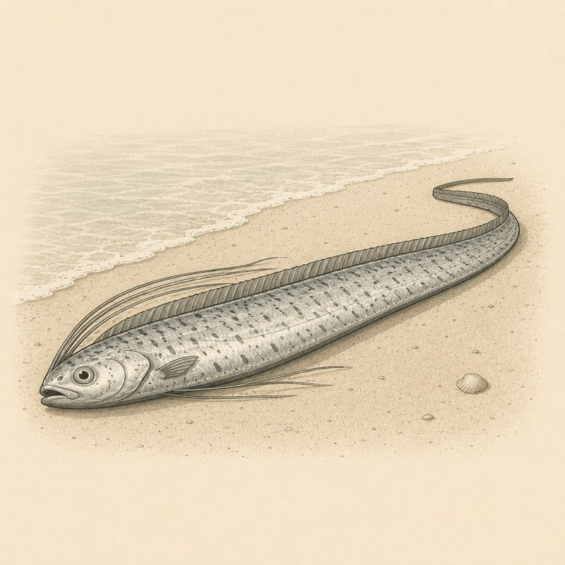

Ereignisse

Welches Beben hat er angekündigt?
Der Riemenfisch gilt in Japan als „Bote aus dem Drachenpalast“ und Erdbeben-Omen – die Statistik fand unter 336 Sichtungen seit 1928 genau einen Treffer. Das Internet nennt ihn trotzdem Doomsday-Fisch.
Der Riemenfisch heißt auf Japanisch „Ryugu no tsukai“ – „Bote aus dem Palast des Drachengottes Ryujin“ – und gilt einer populären Deutung zufolge als Vorbote von Erdbeben; vor der Tohoku-Katastrophe 2011 (Mw 9,0, über 19.000 Tote, Kernschmelze in Fukushima) waren zuvor rund 20 Tiere an Japans Küsten aufgetaucht, was die Legende neu befeuerte. Eine statistische Studie von Orihara et al. (2019, Bulletin of the Seismological Society of America) glich jedoch 336 dokumentierte Erscheinungen von Tiefseefischen zwischen November 1928 und März 2011 mit 221 Erdbeben ab und fand nur einen einzigen plausibel korrelierten Fall – kaum ein Beleg für einen Zusammenhang. Riemenfische leben in großer Tiefe und stranden vermutlich, wenn sie krank oder sterbend sind oder durch veränderte Meeresbedingungen (etwa El Niño/La Niña) in flaches Wasser geraten. Seit 2024 rollt bei fast jeder kalifornischen Strandung eine „Doomsday fish“-Welle durch die Medien – obwohl allein vor August 2024 in über 120 Jahren nur 19 Exemplare an Kaliforniens Küste dokumentiert waren. Manche Folkloristen bezweifeln sogar, dass die traditionelle japanische Erdbeben-Mythologie überhaupt vom Riemenfisch handelt: Klassisch wird das Beben dem Riesenwels Namazu zugeschrieben, nicht dem Fisch aus der Tiefe.
Quellen zum realen Hintergrund:
en.wikipedia.org → phys.org → npr.org → livescience.com →